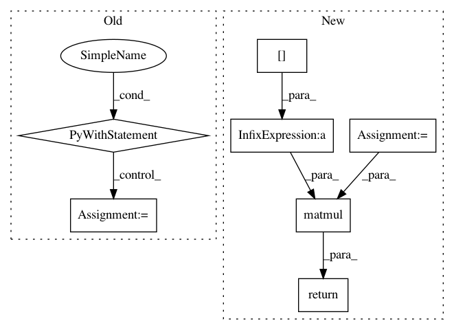

d1ac7b831ad36cd0e4bdd7980819f83208345148,gpflow/expectations.py,,_expectation,#Any#Any#Any#Any#Any#,403
Before Change
]):
Xmu = tf.identity(Xmu)
with params_as_tensors_for(lin_kern), \
params_as_tensors_for(identity_mean), \
params_as_tensors_for(feat):
N = tf.shape(Xmu)[0]
op = tf.expand_dims(Xmu, 2) * tf.expand_dims(Xmu, 1) + Xcov // NxDxD
return lin_kern.variance * tf.matmul(tf.tile(tf.expand_dims(feat.Z, 0), (N, 1, 1)), op)
@dispatch(Gaussian, (mean_functions.Linear, mean_functions.Constant), type(None), type(None), type(None))
def _expectation(p, mean, none1, none2, none3):
It computes the expectation:
After Change
with params_as_tensors_for(kern), params_as_tensors_for(feat):
N = tf.shape(Xmu)[0]
var_Z = kern.variance * feat.Z // MxD
tiled_Z = tf.tile(tf.expand_dims(var_Z, 0), (N, 1, 1)) // NxMxD
return tf.matmul(tiled_Z, Xcov + (Xmu[..., None] * Xmu[:, None, :]))
@dispatch(MarkovGaussian, kernels.Linear, InducingPoints, mean_functions.Identity, type(None))
def _expectation(p, kern, feat, mean, none):
In pattern: SUPERPATTERN
Frequency: 3
Non-data size: 7
Instances
Project Name: GPflow/GPflow
Commit Name: d1ac7b831ad36cd0e4bdd7980819f83208345148
Time: 2018-02-07
Author: alex.ialongo@gmail.com
File Name: gpflow/expectations.py
Class Name:
Method Name: _expectation
Project Name: GPflow/GPflow
Commit Name: d1ac7b831ad36cd0e4bdd7980819f83208345148
Time: 2018-02-07
Author: alex.ialongo@gmail.com
File Name: gpflow/expectations.py
Class Name:
Method Name: _expectation
Project Name: NifTK/NiftyNet
Commit Name: 135a56e0935fbb04811f8ce7b9f514f498212f71
Time: 2018-07-25
Author: wenqi.li@ucl.ac.uk
File Name: niftynet/layer/crf.py
Class Name:
Method Name: ftheta